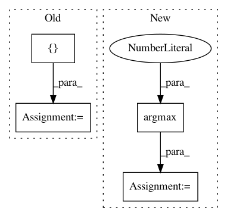

5c177f3d9a29fc7737bd4734315820d1c11c7e87,cnn_text_classification.py,CNNClassifier,predict,#CNNClassifier#,156
Before Change
self.__model.eval()
text = [[self.__text_field.vocab.stoi[x] for x in text]]
x = Variable(torch.tensor(text))
x = x.cuda() if self.cuda and torch.cuda.is_available() else x
_, predicted = torch.max(self.__model(x), 1)
After Change
return y_output
def predict(self, X):
y_pred = [torch.argmax(yi, 1) for yi in self.__predict(X)]
return [self.__label_field.vocab.itos[yi.data[0] + 1] for yi in y_pred]
def predict_proba(self, X):
softmax = nn.Softmax(dim=1)
In pattern: SUPERPATTERN
Frequency: 3
Non-data size: 4
Instances
Project Name: Shawn1993/cnn-text-classification-pytorch
Commit Name: 5c177f3d9a29fc7737bd4734315820d1c11c7e87
Time: 2019-07-17
Author: rriva002@ucr.edu
File Name: cnn_text_classification.py
Class Name: CNNClassifier
Method Name: predict
Project Name: yahoo/TensorFlowOnSpark
Commit Name: 981e4266d4ea816b08a762193bd52f40cd1a3242
Time: 2019-08-07
Author: leewyang@verizonmedia.com
File Name: examples/mnist/keras/mnist_inference.py
Class Name:
Method Name: inference
Project Name: scikit-multiflow/scikit-multiflow
Commit Name: a8d354aa3f1d796ebfcf41586af1eb925f229ecc
Time: 2020-04-01
Author: 17923265+jacobmontiel@users.noreply.github.com
File Name: src/skmultiflow/lazy/knn_classifier.py
Class Name: KNNClassifier
Method Name: predict